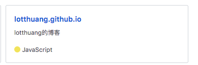
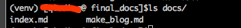

一 申请github pages
1 有2种Github Pages sites:
- Project Pages sites
个人感觉是开源项目用的比较多
- User and Organization Pages sites
个人用户或者小型团队使用这种
2 搭建Github Pages sites的前提条件
需要配置一个发布源(publishing source),发布源有3种方式:
1 使用某个repo的master分支
2 使用某个repo的gh-pages分支
3 使用某个repo的master分支的/docs目录
如果你的repo是“用户名.github.io”（比如 zhangsan.github.io）,那么github.com默认就是使用该repo的master分支作为发布源，并不能使用以上2、3的方式。
以我们的使用经验来说，就是希望专门有一个repo来发布用markdown写的个人文章，形成一个个人博客，完全可以采用建立名为zhangsan.github.io的repo，然后采用master分支作为发布源的这种模式。
以下是我们新建的一个repo:

打算使用该repo的master分支作为发布源(pushing source).
二 本地使用mkdocs工具
（1）安装mkdocs
pip install mkdocs
(2) 开始一个新的文档项目
$ mkdocs new final_docs
$ cd final_docs
(3) 编写相应的文档
1 一开始final_docs的目录结构如下
2 通过修改mkdocs.yml 来组织博客的框架，这里给出我的内容，作为参考
$cat mkdocs.yml
site_name: Lott's Blog
use_directory_urls: true
theme: readthedocs
pages:
- 首页: 'index.md'
- 博客搭建:
- 利用Github Pages和mkdcos搭建博客: 'make_blog.md'
3 最终目录结构如下

4 此时使用mkdocs serve命令，先在本地看一下博客效果
$ mkdocs serve
Running at: http://127.0.0.1:8000/
三 把本地的markdown文件转化为html,推送到github上
1 转化成html,使用mkdocs 命令
$mkdocs build
WARNING - Config value: 'pages'. Warning: The 'pages' configuration option has been deprecated and will be removed in a future release of MkDocs. Use 'nav' instead.
INFO - Cleaning site directory
INFO - Building documentation to directory: /Path/to/final_docs/site
从这里，我们看到它把html文件全部放在了final_docs/site目录下,包括index.html
因此，我们把site目录下的文件，全部推送到github上，就可以作为Github Pages sites了
2 如果是第一次提交github,那么执行以下命令即可，如果不是第一次提交，请自行解决github的使用问题
git init
git remote add origin https://github.com/<你的用户名>/<你的用户名>.github.io.git
git pull origin master
git add .
git commit -m "fisrt commit"
git push origin master
稍等1～2分钟，我们就打开https://<你的用户名>.github.io/ ,就能看到我们的博客页面了
四 参考文档
1 Github Pages 说明: https://help.github.com/articles/creating-project-pages-using-the-command-line/
2 mkdocs官网文档: https://markdown-docs-zh.readthedocs.io/zh_CN/latest/
五 额外补充
如果你有一个nginx服务器（apache也一样），可以把site目录放到对应的主机上，然后使用nginx作为web服务器，也可以把相应的文档作为博客展示.
nginx配置参考如下:
server {
listen 5001;
server_name _;
root /usr/local/var/www;
access_log /usr/local/var/log/nginx/mkdoc.access.log main;
error_log /usr/local/var/log/nginx/mkdoc.error.log notice;
# favicon.ico
location ~ /favicon.ico$ {
root /usr/local/var/www;
expires 30d;
}
# our site
location / {
root /Path/to/final_docs/site;
index index.html;
}
error_page 500 502 503 504 /50x.html;
location = /50x.html {
root /usr/local/var/www;
}
}